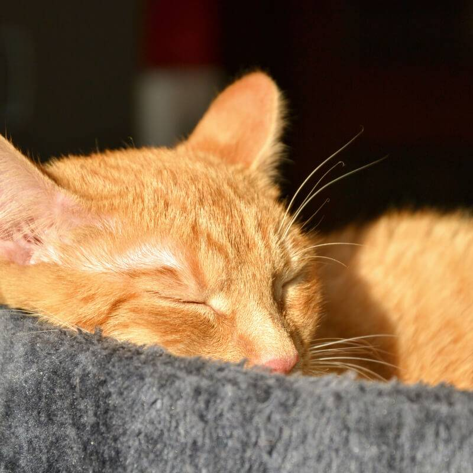
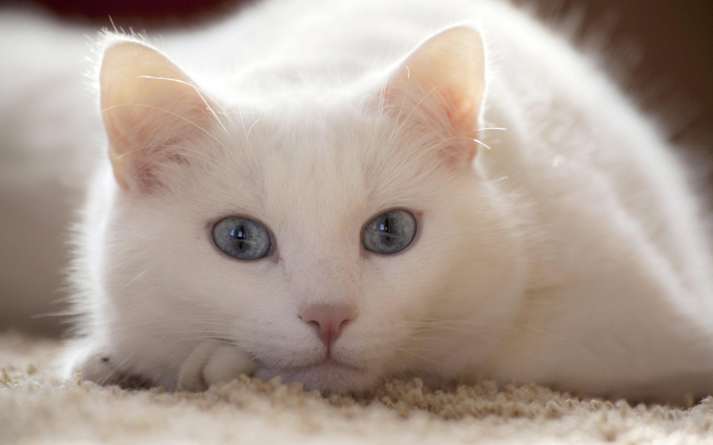
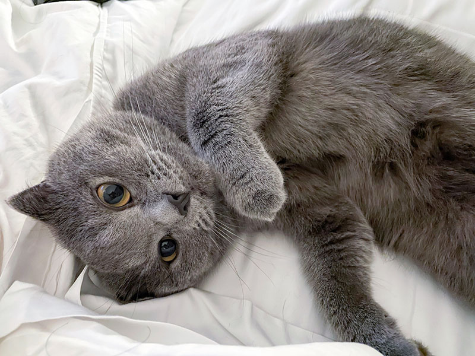
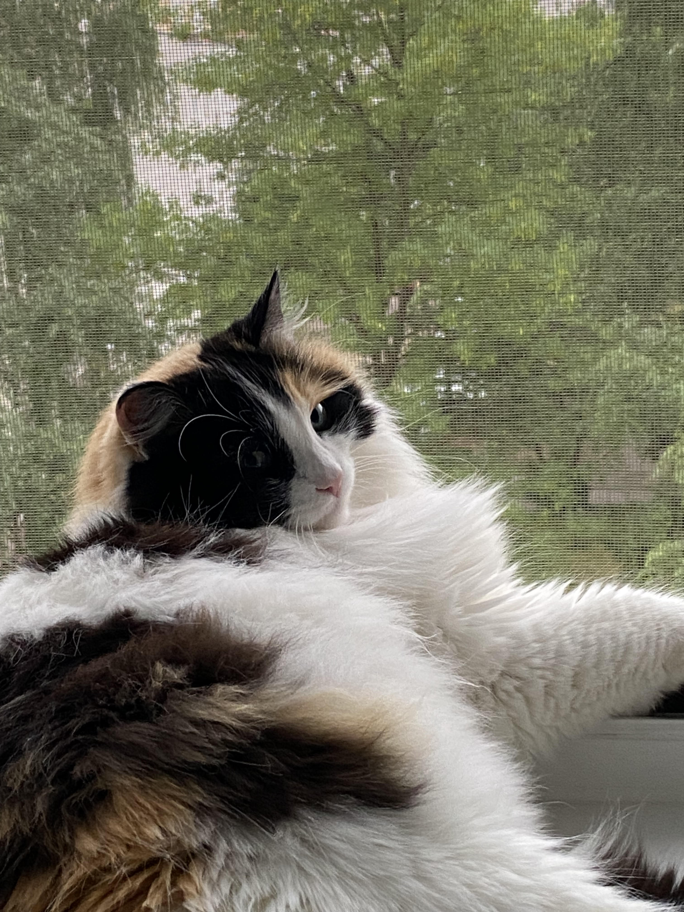

Рыжик 3 года
Главный дегустатор пенки. Встречает гостей у входа и провожает до столика.
Хозяин кафеВсе котики — из приюта. Некоторые из них ищут дом

Главный дегустатор пенки. Встречает гостей у входа и провожает до столика.
Хозяин кафе
Тихая и загадочная. Любит спать на полке с книгами и смотреть, как работает лазер.
Ищет дом
Самый игривый: гоняет мячики и охотится на шнурки. Обожает удочку с пёрышком.
Ищет дом
Трёхцветная королева дивана. Мурчит громче кофемашины.
Хозяйка кафе• • •